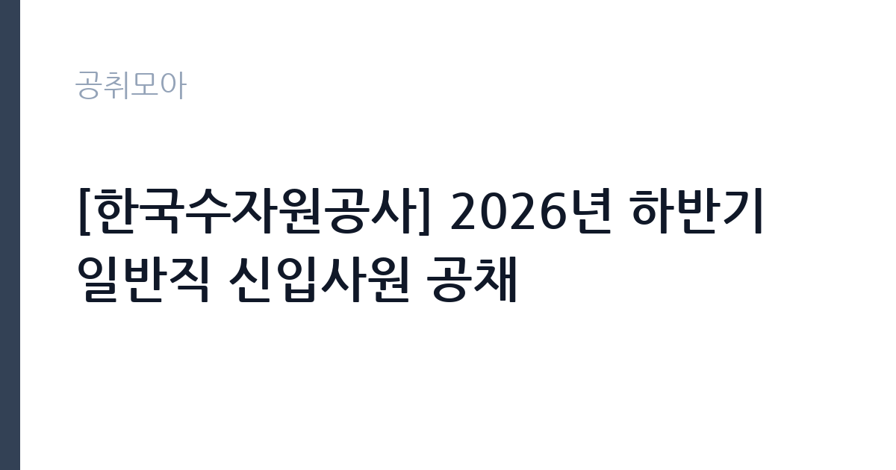

[공공기관] [한국수자원공사] 2026년 하반기 일반직 신입사원 공채
한국수자원공사 · 부산 · 마감 2026-10-07 (D-11) · 출처 잡알리오

한눈에 보는 모집 조건
| 기관 | 한국수자원공사 |
|---|---|
| 공고명 | [한국수자원공사] 2026년 하반기 일반직 신입사원 공채 |
| 고용형태 | 정규직 |
| 근무지 | 부산 |
| 게시일 | 2026-09-23 |
| 마감일 | 2026-10-07 (D-11) |
지원자격, 이렇게 읽으세요
- 공공기관 채용공시
- 세부 조건은 원문 공고문 확인
지원자격은 비교적 넓게 열려 있습니다. 학력, 전공, 학점, 성별, 자격증에 제한이 없으며, 공고 마감일 기준으로 정년인 만 60세 이상인 경우에만 지원하실 수 없습니다. 남성 지원자는 군필 또는 면제자여야 하며, 2026년 11월 29일까지 전역 예정자로서 전형 절차에 응시하실 수 있는 경우에도 지원하실 수 있습니다. 토익 기준 500점 이상의 어학 자격 요건을 충족하셔야 하며, 성적의 인정 범위와 유효기간은 반드시 원문 공고문에서 확인하셔야 합니다. 보훈 분야는 국가유공자 등 예우 관련 법률에서 정한 취업지원 대상자, 장애 분야는 장애인고용촉진 관련 법령에 따른 장애인이어야 합니다. 입사일인 2026년 11월 30일부터 현업에서 전일 근무가 가능하셔야 하며, 공사 인사규정의 채용 결격사유에 해당하지 않으셔야 합니다.
이 공고의 포인트
이 공고의 핵심은 세 가지입니다. 첫째, 단일 직군으로 66명을 선발하는 대규모 채용이라는 점입니다. 둘째, 공사 채용페이지 게시표 기준으로 일반직 66명이 보훈 52명과 장애 14명으로 편성되어 있어, 해당 자격을 갖춘 지원자에게는 경쟁의 폭이 상대적으로 분명한 전형이라는 점입니다. 셋째, 일반직 전형에 별도 필기시험이 없고 1차 서류전형과 2차 면접으로 합격자를 결정한다는 점입니다. 필기 준비 부담이 적어 어학과 서류·면접에 강점이 있는 지원자에게 유리한 구조입니다. 근무지는 부산·대구·인천·대전·울산·세종·경기·강원·충북·충남·전북·전남광주·경북·경남·제주 등 전국으로 안내되어 있어 지역 선택의 폭도 넓습니다.
전형은 어떻게 진행되나
전형은 1차 서류전형과 2차 면접전형으로 진행됩니다. 1차에서는 어학과 자격증 등을 심사하여 분야별로 2배수에서 5배수 내외를 선발합니다. 1차 합격자는 자기기술서와 경험기술서를 제출하고 직업성격검사에 응시하셔야 하며, 조직 적응역량 등을 확인하는 절차입니다. 2차 면접은 직무피티면접 40점과 경험역량면접 60점으로 구성되며 1배수를 선발합니다. 이후 지원자격과 어학성적 등에 대한 관련 기관 진위 확인을 거쳐 적부심사위원회에서 적부 판정을 내립니다. 최종 합격은 2차 전형 점수 100점에 가점을 더한 고득점자 순으로 결정됩니다. 합격자는 3개월의 수습 직원으로 채용되며, 평가에서 일정 점수 이상을 받으셔야 수습이 해제됩니다. 수습 중 근무평가 등이 불량할 경우 면직될 수 있다는 점을 미리 확인하시기 바랍니다.
원문에서 확인한 전형 방식
1. 학력, 전공, 학점, 성별, 자격증 등 제한 없음 (단, 공고 마감일 기준 정년(만 60세) 이상인 자는 지원 불가) 2. 남성의 경우 군필 또는 면제자 (단, '26.11.29.까지 전역예정자로서 전형절차에 응시 가능한 경우 지원 가능) 3. K-water 인사규정의 채용 결격사유에 해당하지 않는 자 4. 입사일('26.11.30.)부터 현업 전일근무 가능자 5. TOEIC 기준 500점 이상의 어학 자격 요건(공고문 참고) 6. (보훈 분야) 「국가유공자 등 예우 및 지원에 관한 법률」등 관련 법률에서 정한 취업지원 대상자 7. (장애 분야) 「장애인고용촉진 및 직업재활법 시행령」에 따른 장애인
이런 분께 추천해요
- 보훈 또는 장애 분야 자격을 갖추고 공기업 입사를 준비하시는 분께 적합합니다. 66명이라는 규모가 해당 전형으로는 이례적으로 크기 때문입니다.
- 토익 500점 이상의 어학 요건은 갖추었으나 필기시험 준비 여력이 부족하신 분께 적합합니다. 서류와 면접 중심으로 승부가 갈리는 구조이기 때문입니다.
- 2026년 11월 30일 입사에 맞추어 현업 전일 근무가 가능하고 전국 근무지를 수용하실 수 있는 분께 적합합니다.
지원 전 체크리스트
- 토익 500점 이상의 어학 성적을 보유하고 있는지, 성적의 유효기간과 인정 기준일을 원문 공고문에서 확인하셨습니까.
- 보훈·장애 분야 지원자는 관련 법률에 따른 증빙서류를 접수 마감 전까지 준비하실 수 있습니까.
- 2026년 11월 29일까지 전역 가능 여부와 11월 30일 입사 후 전일 근무 가능 여부를 확인하셨습니까.
- 1차 합격 후 제출하는 자기기술서·경험기술서와 직업성격검사를 미리 준비하고 계십니까. 서류 통과 이후 일정이 촉박할 수 있습니다.
모집 일정과 제출 타이밍
지원서 접수 마감은 2026년 10월 7일입니다. 접수 마감일에는 접속이 몰릴 수 있으므로 가급적 마감 2일 전까지 제출을 마치시는 편이 안전합니다. 이후 1차 서류전형 합격자 발표, 자기기술서 제출과 직업성격검사, 2차 면접, 적부심사를 거쳐 2026년 11월 30일에 입사하시는 일정입니다. 1차에서 2배수에서 5배수를 선발하므로 서류 단계의 변별 요소인 어학과 자격증을 먼저 정비하시고, 면접 단계의 직무피티 주제는 접수 기간부터 틈틈이 정리해 두시기를 권합니다.
직무 이해하기: 공공기관
한국수자원공사는 광역상수도와 댐·보 등 수자원 시설을 운영하며 국민 생활용수와 산업용수를 공급하는 물관리 전문 공기업입니다. 기후위기에 따른 가뭄·홍수 대응, 노후 상수도 관망 정비, 스마트 물관리 기술 도입이 주요 현안으로 꼽힙니다. 일반직으로 입사하시면 본사와 지역 지사·수도사업소 등에서 행정·기술 실무를 담당하시게 되며, 세부 직렬별 담당 업무는 원문 공고문의 직무기술서에서 확인하셔야 합니다. 전국 단위 사업장을 순환하며 근무하시는 구조이므로 지역 이동을 전제로 경력을 설계하시는 편이 좋습니다.
자기소개서 작성 팁
자기기술서와 경험기술서가 분리되어 있으므로 두 문서의 역할을 나누시는 편이 좋습니다. 자기기술서에는 지원동기와 공사에 대한 이해, 입사 후 포부를 담으시고, 경험기술서에는 직무와 연결되는 구체적인 경험을 경험 중심으로 서술하시기 바랍니다. 경험을 쓰실 때는 상황과 본인의 행동, 결과를 구분하여 제시하시면 됩니다. 물관리 현안에 대한 본인의 관점을 한 줄이라도 담으시면 다른 지원자와 차별화되실 수 있습니다. 직업성격검사는 조직 적응역량을 확인하는 절차이므로 일관성 있게 솔직하게 응답하시는 편이 좋습니다.
면접 준비 포인트
면접은 직무피티면접 40점과 경험역량면접 60점으로 구성됩니다. 직무피티면접에서는 물관리 현안이나 직무 관련 주제에 대한 이해와 설명력을 평가하므로, 가뭄·홍수 대응과 노후관망 정비, 스마트 물관리 등 공사의 주요 사업 방향을 미리 정리해 두시기를 권합니다. 경험역량면접에서는 제출하신 경험기술서의 내용을 중심으로 질문이 이어지므로, 기재하신 경험마다 추가 질문에 답하실 수 있도록 수치와 본인의 역할을 구체적으로 준비하시기 바랍니다. 최종 합격은 면접 점수에 가점을 더해 결정되므로 가점 해당 여부도 사전에 확인하시기 바랍니다.
급여·근무조건 읽는 법
원문 공고문에 보수표가 포함되어 있지 않아 확정된 초임 수치를 이 글에서 단정하지 않습니다. 참고로 외부 취업정보 기준으로는 한국수자원공사의 대졸초임이 7,044만원 수준으로 안내되어 있으며, 알리오 경영공시 기준 직원 평균보수는 성과급 포함 약 8,165만원 수준으로 알려져 있습니다. 다만 이는 원문 공고의 수치가 아니라 외부 참고치이므로, 기본급과 수당·상여, 실수령액은 알리오 경영공시의 보수 항목과 원문 공고문의 근로조건을 함께 확인하시기 바랍니다. 수습 3개월 동안의 급여 지급 조건도 원문에서 확인하셔야 합니다.
자주 묻는 질문
- 필기시험이 정말 없습니까.
일반직 전형은 1차 서류전형과 2차 면접전형으로 안내되어 있으며 별도 필기시험은 없습니다. 다만 1차 합격자를 대상으로 직업성격검사가 실시되므로 이를 필기와 혼동하지 마시기 바랍니다. - 근무지역을 선택할 수 있습니까.
근무지역은 부산·대구·인천·대전을 포함한 전국 15개 권역으로 안내되어 있습니다. 권역별 배치 방식과 희망 반영 여부는 원문 공고문에서 확인하시기 바랍니다. - 수습 기간에 탈락할 수도 있습니까.
최종합격자는 3개월의 수습 직원으로 채용되며, 평가에서 일정 점수 이상을 받으셔야 수습이 해제됩니다. 수습 중 근무평가 등이 불량할 경우 면직될 수 있다고 공고문에 명시되어 있습니다.
함께 보면 좋은 공고
[공공기관] [속리산] 속리산국립공원사무소 기간제(탐방해설) 직원 채용 재공고 — 마감 2026-10-08[공공기관] 발전공기업 통합실무지원단장 채용공고 — 마감 2026-10-08[공공기관] [설악산] 설악산국립공원 기간제 직원[환경관리(한시인력)] 채용 공고 — 마감 2026-10-01출처: 잡알리오 공개정보를 바탕으로 공취모아가 정리한 안내글입니다. 모집 조건·일정은 변경될 수 있으니 지원 전 반드시 원문 공고문을 확인하세요. 본 글은 정보 제공용이며 합격을 보장하지 않습니다.